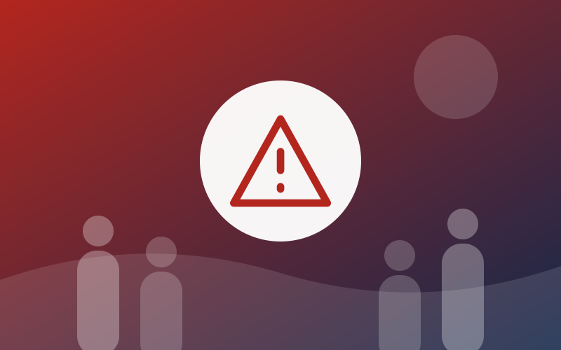

Emergency Contact Directory
Organized contact formats for emergency services (placeholders only).

Not for real emergencies. These are fictional placeholder records with no verified numbers. In a real emergency, use verified official sources and your local emergency services.
Loading…